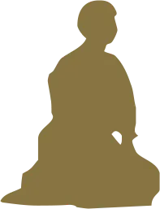
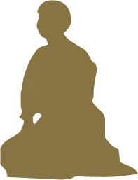
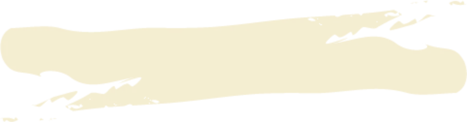
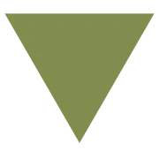
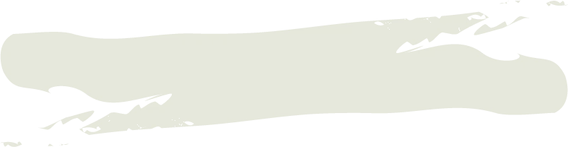
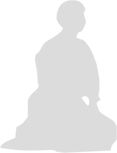
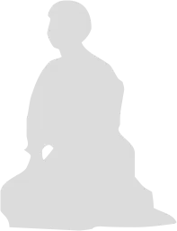

「合気は、才能やセンスがある人だけのものじゃないの？」
そう不安に思うかもしれません。
しかし、倉部先生が体系化した筋電流 × 身体構造 × 意識操作による合気理論は、誰でも「再現できる順序」で身につけられるように設計されています。
特別な体力も、特別な道場環境も必要ありません。この３つのステップを踏むだけで、あなたの合気は「たまたま出る技」から「狙って発動できる技」へと変わります。
ステップ 1
脱力と無意識動作で「力み」を消し、合気の土台をつくる
最初のステップは、脱力法と無意識動作法 で、合気の最大の敵である「力み」を徹底的に取り除くことから始まります。
- どこに余計な筋力が入っているのか
- どの関節がロックされているのか
- 「抜くべき力」と「残すべき支え」の違い
を、倉部先生の指導に沿って一つずつ確認しながら、無意識でも力みに戻らない身体の使い方 を身体にインストールしていきます。
ここで土台が整うことで、この後に続く「平衡法」「波動」「筋電流」の効果が一気に高まり、小柄でも、年齢を重ねていても崩せる身体 へと変わり始めます。
ステップ 2
平衡法と波動法で、相手の「構造」そのものを崩す
次に取り組むのが、力の平衡法と波動法 です。
ここでは、相手と自分の重心・軸・支点の関係を捉え、「どこをずらせば、最小の力で最大の崩れが起きるか」を身体構造と力学の視点から理解していきます。
- 相手の支えを見つける
- 自分の軸をぶらさずに、相手の平衡をずらす
- 微細な「波」を通して、相手の体幹・足元まで伝える
こうしたプロセスを、倉部先生の手順どおりに反復することで、
「押しているのに、押していない」
「触れただけで、相手が勝手に崩れていく」
という、合気特有の崩れ方が再現できるようになります。
ここまで来ると、相手の体格や腕力に関係なく、「構造の弱点」に触れるだけで崩せる感覚が芽生えます。
ステップ 3
筋電流と合気モードで、「脳が反応する崩れ」を再現する
最後のステップでは、いよいよ筋電流法と合気モードによって、相手の脳神経レベルの反応までを利用した崩し方を学びます。
- 触れた瞬間に相手の力が抜ける
- 動こうとしても、身体が勝手に固まる
- 相手の脳が「抗えない」と判断してしまう
といった、一見「不思議」に見える現象を再現可能な「合気の技術」として自分のものにしていきます。
たったこれだけの、３つのステップです。
それでも…あなたはまだ
「本当に自分にも「再現できる合気」が身につくのか？」
「感覚に頼らずに、ここまでできるようになるのか？」
と不安に感じるかもしれません。
しかし、倉部先生が、
脱力 → 無意識動作 → 波動法 → 平衡法 → 筋電流 → 合気モード
というプロセスを、誰でもたどれる形に整理したことで、
『合気は「信じるもの」ではなく、自分の身体で証明できる技術』
として学べる時代になりました。
あなたもこの３つのステップから、
「偶然の成功」に終わらない、「狙って再現できる合気」を手に入れてみませんか？
お弟子様の声
-
製薬会社勤務の傍ら、一燈庵(いっとうあん)の名前で伝統気功の普及活動等を行う。武術は20年に渡って剣術、居合、中国武術、合気道などを経験
倉部先生と逆手道に対する想い 上達への階梯がこの上なく細かく明確に設定されてことに倉部先生の並々ならぬ工夫とエンジニアらしい分析力と企画力とを感じます。先生は「気」の言葉を使わないようにされていますが、気功を学ぶ私としては逆手道の稽古を通じて「気」の違った側面を捉えていきたいです。詳細を確認する
-

通信教育から道場開設へ
大泉 真二 様
主席師範 松山支部長
逆手道習得年月 ７年9月
経歴 極真会館 二段位
沖縄剛柔流空手協会 参段位私の合気柔術逆手道の学びは、通信教育から始まりました。道場に通うことなく、体系化された理論とカリキュラムに基づいて稽古を進めることができ、自身の技術習得の進捗を明確に把握することができました。映像を通じて倉部宗師より直接評価をいただき、具体的な修正点をご指導いただくことで、技の精度を高めることができました。
また、松山にて宗師から直接ご指導いただく機会にも恵まれ、通信教育では伝わりにくい細部を補完し、理解を深める貴重な経験となりました。
令和4年5月には、通信教育開始当初から共に稽古を重ねてきた仲間とともに道場を開設し、地域に根ざした活動をスタートいたしました。倉部宗師が創設された技術体系は、原理が明確で、誰もが段階的に習得できる構造となっており、今後は松山地区における合気柔術逆手道のさらなる普及と発展に貢献してまいります。詳細を確認する
-

初心者でも増える実感が楽しい
座間 翔子 様
社会・文化事業プロジェクトマネージャー経歴
2024年より個人事業主として独立。「いのちの大切さ」をテーマにした社会・文化事業の企画・運営サポートを開始。
・タイ・国連カンファレンスセンター（UNCC）開催「アジア女性リーダーズ国際プレサミット2024」事務局長
・2025年大阪・関西万博 EXPOホール催事「アート体感 LIFEいのち with スーパーキッズ・オーケストラ」プロジェクトマネージャー
合気習得年月：1年未満（2025年2月17日～開始）
国際交流イベントの新年パーティーで倉部先生にお会いしたことがきっかけで、合気を学ぶ機会に恵まれました。
武術経験は全くありませんでしたが、體の健やかな在り方や使い方、日本の伝統文化、合気という未知の分野に興味があったことから、飛び込みました。
倉部先生は、時に「怪しい」と思われがちな合気の原理を、長年にわたりロジカルに解明し、体系立てて教えてくださいます。そのため、初心者の私でも、毎回の練習でできることが少しずつ増えていき、学ぶことが楽しいです。
倉部先生の寛容であたたかいお人柄、惜しみなく知見を共有してくださる姿勢に、そのような先生に恵まれたことに感謝しています。
日本の無形文化遺産でもある合気を大切に学び、その精神を生かしたいと思っています。詳細を確認する
-

合気への憧れと先生の魅力
泉水 章浩 様
泉水流柔術代表
修行年月：7か月その昔、『合気』という技術に憧れた時期があった。まだ、インターネットも一般的でなかった時代。
図書館や本屋でそれらしい題名の書籍を探すしかなかった。おそらく秘伝として扱われているからだろう。
書籍にもわざと断片的に書かれている内容を、乏しい想像力を働かせて再現を試みるしかなかった。
時は流れ、何の因果か自身で流派を起こし、武術や護身術を教える身となった。
他流派の先生方との交流も多くなっていく。
そんな時、親しくさせて頂いている一灯庵(気功)の峯村先生からお誘いがあり、合気柔術逆手道の倉部先生をご紹介頂いた。
せっかく『合気』を教えて頂けると言うのに、「私は忖度をしません。技に掛かったフリはしません。」と失礼な事を言い放った私である。
寛容な倉部先生は、そんな私を微笑みながら『合気』でふっ飛ばす。技術の確かさと、人間性に惹かれ、少しでも近づこうと倉部先生に学び続けている。詳細を確認する
-
経歴
千葉県議会議員、NPO法人まちなかカレッジ代表理事、算楽塾塾長、保護司、剣道三段
倉部先生は、普通なら「秘技」と言われるような技を、オープンに惜しみなく、科学的にお伝えされています。オンラインでもご指導されています。映像によって、自分で気づかされ、密度の濃い稽古です。 私自身、教育学を研究し、教育事業を営んでおり、倉部先生の指導方法から沢山のヒントを頂いてきました。 また、政治家として、生き馬の目を抜くような世界で活動してますが、合気柔術逆手道の教えが仕事に活かされています。 「握手」をほめられるかともあります。強すぎず、弱すぎず、心が伝わってくるような感じがする、と。稽古で、柔らかな手の内を心がけてた成果です詳細を確認する
推薦の声
 -

物理原則で解く合気術の魅力
稲吉優流 様
振付家・舞踊家・柔芯躰メソッド考案者世界16都市で振付作品を発表し、1万人以上のプロパフォーマーを育成。 ジャズダンス・モダンダンス・コンテンポラリーダンス等のジャンルでは海外・国内にて数多くの受賞体験を持つ 近年ではダンスグランプリヨーロッパ2015&2016にて、2年連続の三冠獲得 2012年より「動きの文法〜柔芯躰メソッド」を考案し、多くのアスリートやトレーナー、ヨガ・ピラティス指導者に影響を与えている
推薦文 倉部先生は日本人として、合気柔術逆手道を実証主義社会のヨーロッパで、長年指導・普及されてきた方です 私は倉部先生に合気術の手解きを受けた経験がありますが… 触れ方に於ける微細な感覚を、実にわかりやすく指導していただきました 「合気」というと、人それぞれの捉え方・イメージがあると思いますが… 倉部先生の合気術は、完全に物理的な原則に沿ったものです チカラを「抜く」からこそ、チカラが「出る」… 一見すると不思議な技の様ですが 例えば一流ピアニストは、力任せに鍵盤を叩きませんよね？ 繊細なタッチで座骨から背骨を通ったエネルギーの筋道を指先から鍵盤に伝えています 倉部先生の合気術は、正にその様な作用を相手のカラダに起こすわけです 皮膚の接触から自然な誘導で相手の重心をコントロールするには、相手と繋がる感覚が肝心です その繋がる感覚の学習法が、倉部先生の合気術ではないでしょうか？ この方法は武道武術未経験の方にもわかりやすく、体系的に学習出来るものです 皆さま是非、合気術の世界に触れて下さい！詳細を確認する
-

合気術と柔術の融合で得た学び
岡部武央 様
合気柔術逆手道 第四代宗師1972年静岡県生まれ。
井上元勝師範の唯心会にて空手道、琉球古武術を学び、1990年より躾道館 小林直樹首席師範に師事し、易筋経、嫡流真伝中国正派拳法、太気至誠拳法、九十九式太極拳を学ぶ。
1998年、第一回世界散打搏撃選手権大会において64キロ級チャンピオンとなる。
2011年より深井信吾師範に禅密功、回族心意六合拳、山西派宋氏形意拳を中心に楊家太極拳の要訣を学ぶ。
2017年より合気柔術逆手道 第二代宗師 倉部至誠堂先生に師事し、柔術、合気柔術、合気術を学び、2025年6月に第四代宗師に任命される。
現在、千葉県柏市を中心に九十九式太極拳の指導を行っている。また、合気柔術逆手道、中国武術内家拳の身体操作と鍛練法、交差法の指導を行い、好評を博している。
プロボクサー、ムエタイ選手、Kー1選手へ指導した際には各選手共に負けなしという試合実績に貢献する。
2024年10月より、櫻公路伝熊式易筋経と嫡流真伝中国正派拳法を本格的に指導開始。
2025年9月、ブラジル・ブラジリアにて開催の第17回世界武術選手権大会 散打65キロ級出場の弟子・村瀬崚馬選手のコーチとして帯同する。
九十九式太極拳の会・代表師範。総合武道研究会 玄武館会長。躾道館師範。
合気柔術逆手道 第四代宗師。日本武術太極拳連盟 東京武術散手俱楽部教練。
全日本太極拳連合会 六段範士。
この度は、合気柔術逆手道第二代宗師 倉部至誠堂先生がトレンドアクアより合気術の教材を御出版されるとの事、誠におめでとうございます。
私にとって、倉部先生は合気柔術逆手道の恩師であり、2017年4月より懇切丁寧に御指導頂いた事により、精妙な合気術と大変極めがしっかりした柔術技を体得する事が出来ました。合気術と柔術の融合が合気柔術といってよいかと思います。
また、私が主に実践、指導させて頂いている太極拳をはじめ、様々な武術・武道、格闘技の理解と向上にも大変役立ちました。
今回の教材プログラムは、初心者の方々でも映像を観ながら合気術を学べるように構成されています。
倉部先生のわかりやすい解説と術理が、合気術の理解と体得に役立つ事は間違いないと思います。
更に、長年修錬されているが、なかなか合気の習得が難しい方々にも今回のプログラムで学習される事を御薦め致します。
このプログラムで学ばれた方々と一緒に稽古が出来ます事を楽しみにしております。詳細を確認する
-

再現性ある合気の科学的指導
岩﨑秀昭 様
元陸上自衛隊上級格闘指導官経歴・肩書
元陸上自衛隊上級格闘指導官（第一空挺団拳法訓練隊監督）
日本拳法全国少年連盟副会長
全自衛隊拳法連盟審判部長（六段）
和楽堂整体院院長
この度トレンドアクア社様より、合気柔術逆手道二代目宗師倉部至誠堂先生のDVD『科学で解き明かす合気の神髄』の完成、大変うれしく思います。
倉部先生は、これまで各指導者によって抽象的かつ曖昧だった『合気』の概念とその指導法をその理系の頭脳で解析をされ、ある程度なら誰にでも直ぐその場で合気を体験・再現させるメソッドを確立された合気武術界では極めて稀有な指導者だと思います。
私は競技の世界、即ち身体能力を競い合う世界で生きて来ましたが、それに飽き足らず武術の蘊奥を求め続けて辿り着いたのが倉部先生の逆手道でした。
『合気』は直接の闘争の手段とするには互角の技量と身体能力が必要かも知れません、例えば私が指導をしている日本拳法の試合でも時に『合気に掛かったとしか思えない』ような相手が見事に宙を舞う、呆気なく崩れるという事象を目にしますが、偶然？たまたま？同じ選手でも再現性があるとは云えません。倉部先生の指導がその科学的検証の積み重ねによる再現性が特徴と云えます。
また。私は現在整体を生業としていますが『合気の手』（合気接触法）で触れるだけ、または自身が合気モードに入ることにより、感度の良い患者さんは接触する前から身体が緩み痛みが和らぐという現象を日々体験をしています。倉部先生はいつも笑顔で穏やかで、いわゆる武道家然とした強面の方ではありません。これからの世の中は『合気の平和利用（癒し）』が必要とされる時代なのかも知れません。詳細を確認する
指導者プロフィール
-
経歴／実績
1950年生まれ
千葉県柏市出身
合気柔術 逆手道の第二代宗師- 1989年、オランダに渡航。
- 1990年代に逆手道創始者 田中忠秀堂師範が没し、後継者不在で流派が途絶えかけたことを受け、欧州で逆手道の指導を開始。
- 武道・工学・教養分野で複数の著作と翻訳を出版。
- 2013年、逆手道の宗師（流派の長）に就任。
- 2015年に定年退職し、それ以降は執筆と柔術・合気術の普及活動に専念。
- 合気柔術 逆手道の宗師として、セミナー、講習会、オンライン指導などを通じて活動中
悩みが解決する
「再現できる合気」の秘密
あなたは、こんな壁に何度もぶつかったことはありませんか？
- 今日はできたのに、次の日は崩せない…
- 『もっと力を抜け』『気を通せ』と言われても、結局なにをすればいいのかわからない…
- 大柄な相手には全く効かない。やっぱり体格差には勝てないのかと思ってしまう…
- 合気は「演武」でしか通用しないのかと人に言えない…
- 技が決まる理由を説明できないから、自信が持てない…
これらは、合気を真剣に探求してきた人ほど必ず直面する「共通の悩み」です。
感覚で覚え、抽象語で教えられ、才能でしか再現できない—
そんな「ブラックボックス化した合気」に、あなたも長く苦しめられてきたはずです。
しかし、倉部至誠堂・第二代宗師の「合気柔術逆手道」メソッドを学べば、
- 筋電流による内部信号操作
- 重心と回転軸の構造制御
- 意識操作による脳反射の引き出し
これらを体系的に理解し、「再現性 × 再現可能な順序」で合気を発動できるようになります。
つまり、これまで「できる人にしかできない」と言われてきた合気が、あなた自身の意思で、狙って、安定して使えるものに変わります。
ここから、倉部宗師が長年の研究と実証で積み上げてきた「再現できる合気」の核心を余すところなくお届けします。
このプログラムの一部をご紹介すると…